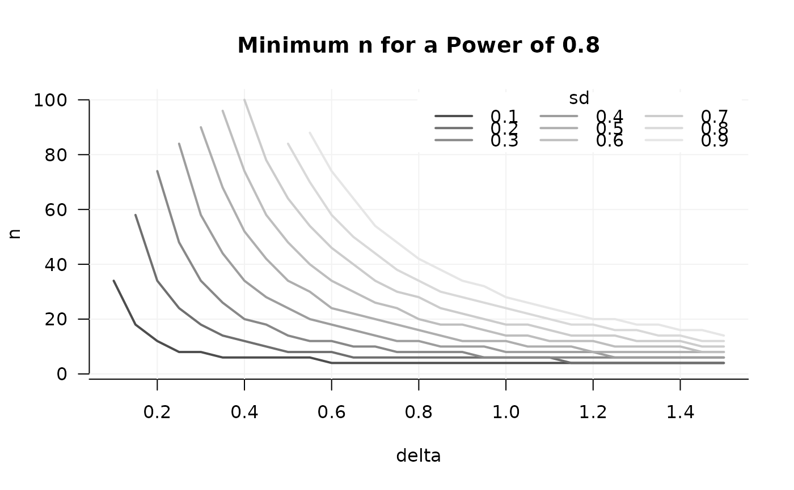
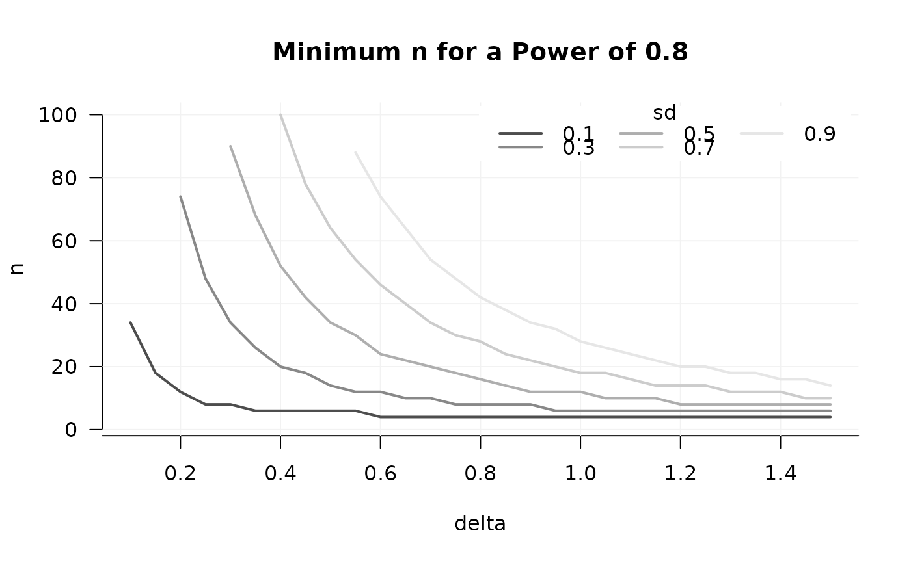
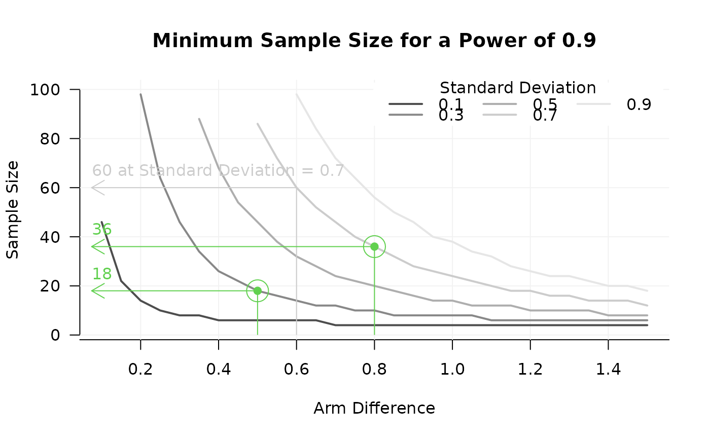
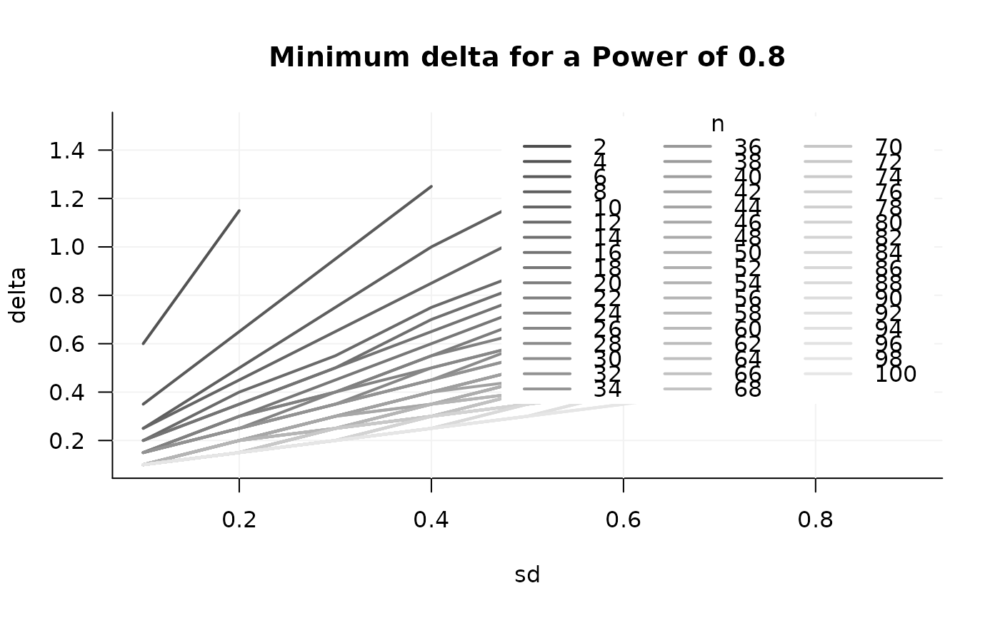
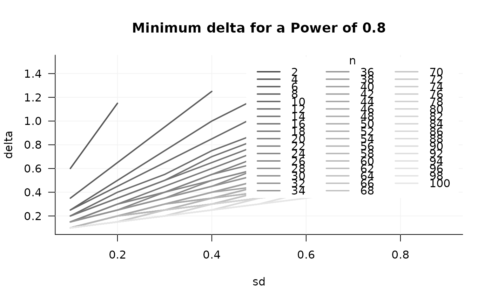

Plots the relation between up to three parameters and, typically, power. Two parameters are represented by x- and y-axes, one by separate lines.
Usage
GridPlot(
x,
slicer = NULL,
y_par = NULL,
x_par = NULL,
l_par = NULL,
par_labels = NULL,
example = NULL,
target = 0.8,
method = "step",
minimal_target = TRUE,
find_min = TRUE,
col = grDevices::grey.colors(length(dimnames(x)[[l_par]])),
title = NULL,
xlim = NULL,
ylim = NULL,
smooth = FALSE
)Arguments
- x
An object of class "power_array" (from
powergrid).- slicer
If the parameter grid of
xhas more than 3 dimensions, a 3-dimensional slice must be cut out usingslicer, a list whose elements define at which values (the list element value) of which parameter (the list element name) the slice should be cut.- y_par, x_par, l_par
Which parameter is varied on the x- and y-axis, and between lines, respectively. If NULL,
y_paris set to the first,x_parto the second, andl_parto the third dimension name ofx.- par_labels
Named vector where elements names represent the parameters that are plotted, and the values set the desired labels.
- example
A list defining for which combination of levels of
l_parandx_paran example arrow should be drawn. List element names indicate the parameter, element value indicate the values at which the example is drawn.- target
The target power (or any other value stored in x) that should be matched.
- method
The method to find the required parameter values, see
ExampleandFindTarget.- minimal_target
Logical. Should target be minimally achieved (e.g., power), or maximially allowed (e.g., estimation uncertainty).
- find_min
Logical, indicating whether the example should be found that minimizes an assumption (e.g., minimal required n) to achieve the
targetor an example that maximizes this assumption (e.g., maximally allowed SD).- col
A vector with the length of
l_pardefining the color(s) of the lines.- title
Character string, if not
NULL, replaces default figure title.- xlim, ylim
See
?graphics::plot.- smooth
Logical. If TRUE, a 5th order polynomial is fitted though the points constituting each line for smoothing.
Details
In the most typical use case, the y-axis shows the minimal sample
size required to achieve a power of at least target, assuming the
value of the parameter on the x-axis, and the value of the parameter
represented by each line.
The use of this function is, however, not limited to finding a minimum n to
achieve at least a certain power. See help of Example to understand the
use of minimal_target and fin_min.
Note that a line may stop in a corner of the plotting region, not reaching
the margin. This is often natural behavior, when the target level is
not reached anywhere in that corner of the parameter range. In case n is on
the y-axis, this may easily be solved by adding larger sample sizes to the
grid (consider Update), and then adjusting the y-limit to only
include the values of interest.
Examples
sse_pars = list(
n = seq(from = 2, to = 100, by = 2),
delta = seq(from = 0.1, to = 1.5, by = 0.05), ## effect size
sd = seq(.1, .9, .1)) ## Standard deviation
PowFun <- function(n, delta, sd){
ptt = power.t.test(n = n/2, delta = delta, sd = sd,
sig.level = 0.05)
return(ptt$power)
}
power_array = PowerGrid(pars = sse_pars, fun = PowFun, n_iter = NA)
GridPlot(power_array, target = .8)

## If that's too many lines, cut out a desired number of slices
GridPlot(power_array,
slicer = list(sd = seq(.1, .9, .2)),
target = .8)

## adjust labels, add example
GridPlot(power_array, target = .8,
slicer = list(sd = seq(.1, .9, .2)),
y_par = 'n',
x_par = 'delta',
l_par = 'sd',
par_labels = c('n' = 'Sample Size',
'delta' = 'Arm Difference',
'sd' = 'Standard Deviation'),
example = list(sd = .7, delta = .6))

## Above, GridPlot used the default: The first dimension is what you search
## (often n), the 2nd and 3rd define the grid of parameters at which the search
## is done. Setting this explicitly, with x, y, and l-par, it looks like:
GridPlot(power_array, target = .8,
slicer = list(sd = seq(.1, .9, .2)),
y_par = 'n', # search the smallest n where target is achieved
x_par = 'delta',
l_par = 'sd')
 ## You may also want to have different parameters on lines and axes:
GridPlot(power_array, target = .8,
y_par = 'delta', # search the smallest delta where target is achieved
x_par = 'sd',
l_par = 'n')

## Too many lines! Take some slices again:
GridPlot(power_array, target = .8,
slicer = list(n = c(seq(10, 70, 16))),
y_par = 'delta',
x_par = 'sd',
l_par = 'n', method = 'step')
## You may also want to have different parameters on lines and axes:
GridPlot(power_array, target = .8,
y_par = 'delta', # search the smallest delta where target is achieved
x_par = 'sd',
l_par = 'n')

## Too many lines! Take some slices again:
GridPlot(power_array, target = .8,
slicer = list(n = c(seq(10, 70, 16))),
y_par = 'delta',
x_par = 'sd',
l_par = 'n', method = 'step')